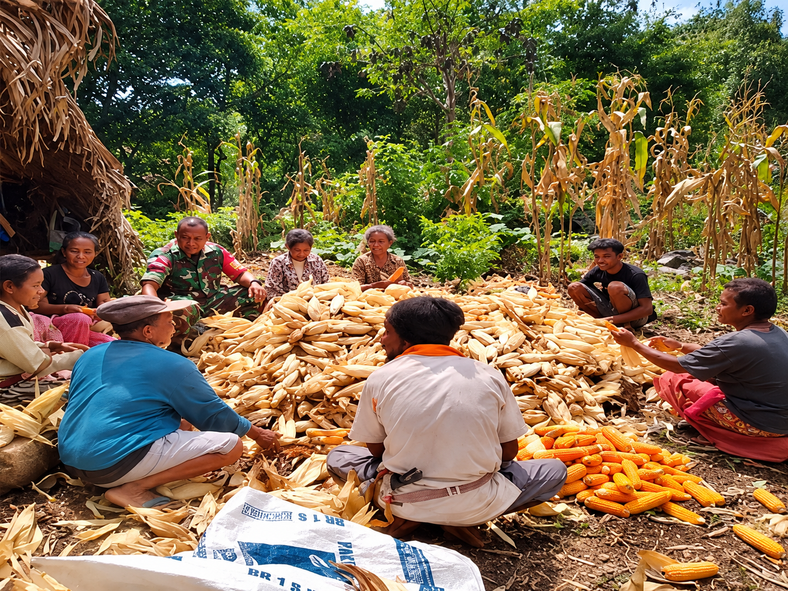
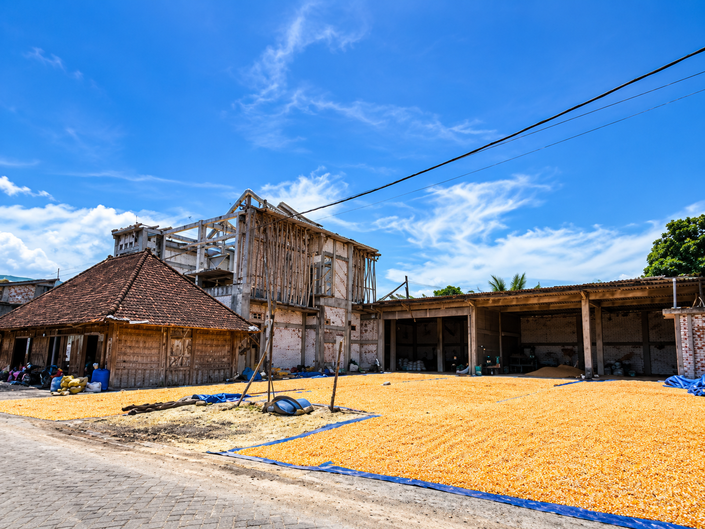
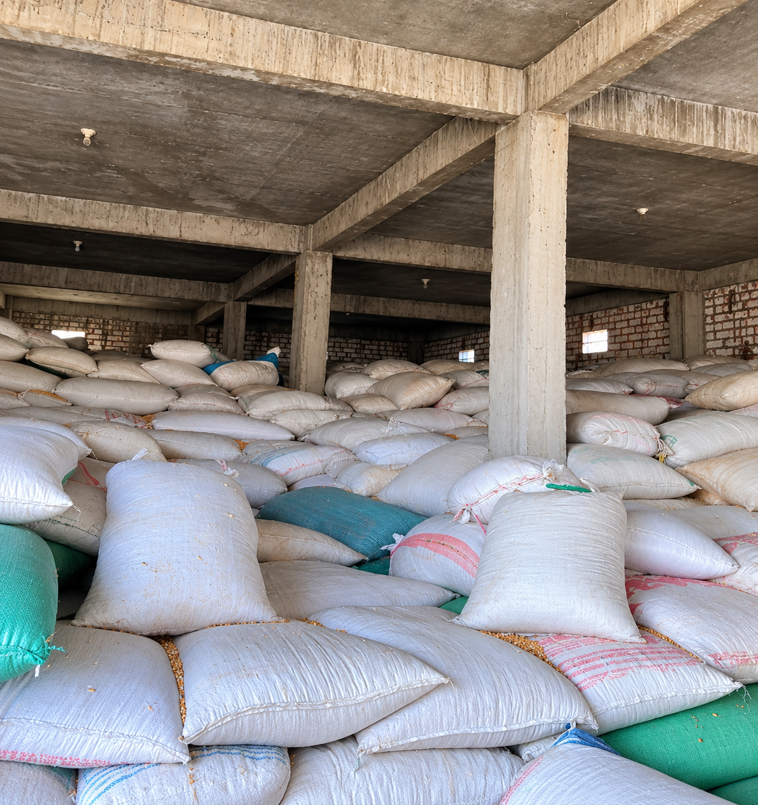
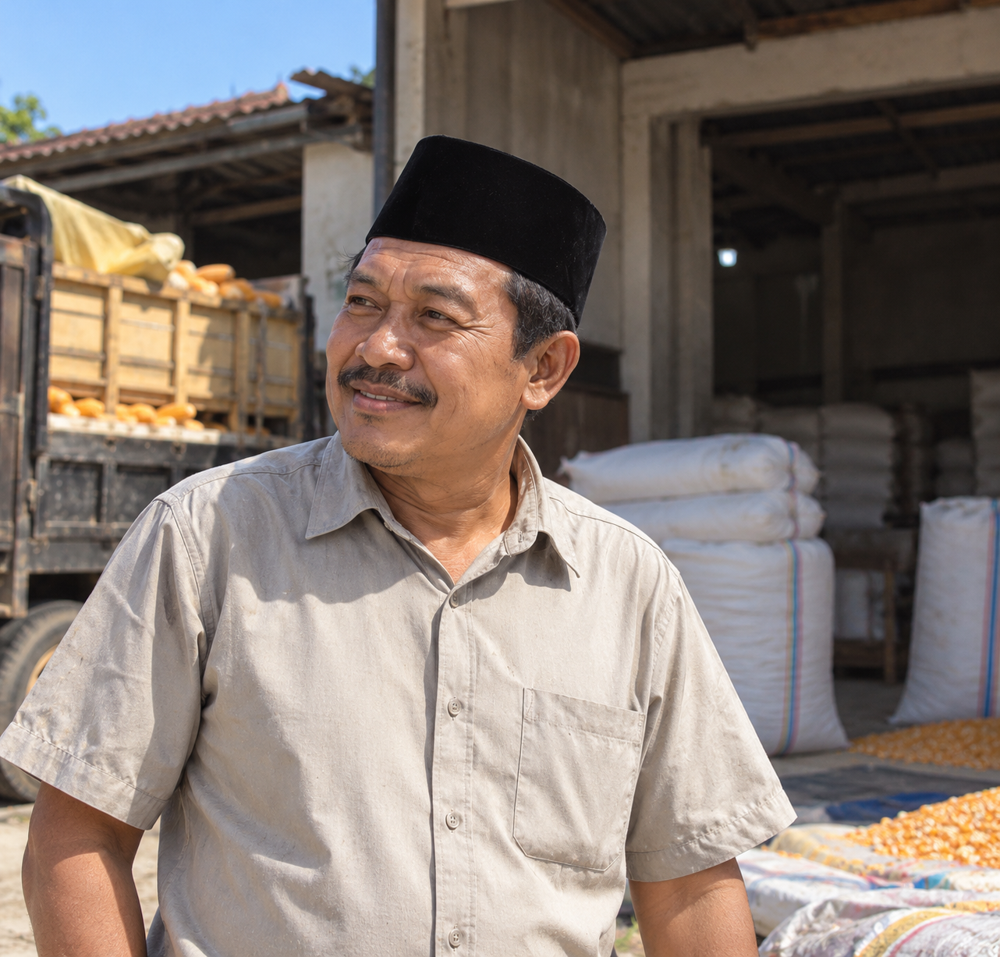
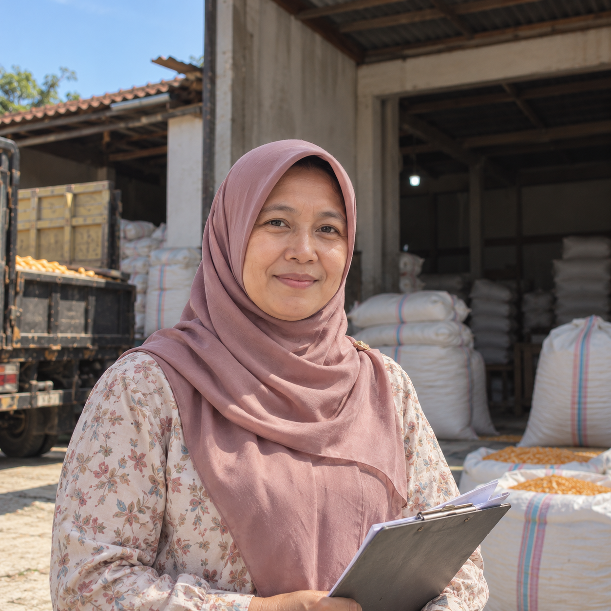

SELAMAT DATANG DI UD SEMOGA LANCAR
Mitra Terpercaya dalam Penyediaan Jagung Pipil Kering
Tentang KamiTentang Kami
Mengenal perjalanan dan kegiatan usaha UD Semoga Lancar.
Mengenal UD Semoga Lancar
UD Semoga Lancar merupakan usaha yang bergerak di bidang manufaktur dengan fokus pada produksi, pengolahan, dan penjualan jagung pipil kering. Perusahaan berawal dari toko pertanian yang didirikan oleh Bapak H. Nur Huda, kemudian mengembangkan usaha perdagangan jagung pipil kering bersama istri pada tahun 2005.
Sejarah Usaha
Berawal dari toko pertanian dan berkembang menjadi usaha perdagangan jagung pipil kering sejak tahun 2005.
Pengembangan Usaha
ada tahun 2009, usaha berkembang dan mencakup penyewaan transportasi pengangkutan.
Produk Utama
Jagung pipil kering merupakan produk yang dihasilkan dan dipasarkan oleh perusahaan.
Lokasi Perusahaan
Kegiatan usaha berlokasi di Desa Tebuwung, Kabupaten Gresik.
Tahun mulai usaha jagung
Tahun pengembangan usaha
Jam operasional per hari
Produk utama

Kegiatan persiapan lahan, pemilihan benih, penanaman, dan pemeliharaan tanaman jagung.

Jagung dipanen saat matang optimal, kemudian bijinya dipisahkan dari tongkol secara manual atau menggunakan mesin.

Biji jagung dikeringkan, dibersihkan, dan disortir sebelum memasuki tahap pengemasan.

Produk dikemas, disimpan, dan didistribusikan untuk memenuhi kebutuhan pasar.
Kegiatan Usaha
Tahapan kegiatan pengolahan jagung pipil kering di UD Semoga Lancar.
Persiapan Lahan dan Penanaman
Proses dimulai dengan persiapan lahan, pemilihan benih unggul, dan penanaman jagung.
Pemeliharaan Tanaman
Tanaman jagung dirawat dan dipelihara hingga mencapai tingkat kematangan yang optimal.
Pemanenan Jagung
Jagung dipanen ketika biji telah mencapai tingkat kematangan yang optimal.
Pemipilan Jagung
Biji jagung dipisahkan dari tongkolnya secara manual maupun menggunakan mesin pipil jagung.
Pengeringan dan Pembersihan
Biji jagung dikeringkan, kemudian dibersihkan dan disortir untuk menjaga kualitas produk.
Pengemasan, Penyimpanan, dan Distribusi
Produk dikemas dan disimpan sebelum didistribusikan kepada pelanggan dan pasar yang dituju.
Visi dan Misi
Arah dan komitmen UD Semoga Lancar dalam menjalankan kegiatan usaha.
Informasi dan Pemesanan
Untuk mengetahui informasi lebih lanjut mengenai jagung pipil kering dan kegiatan usaha UD Semoga Lancar, silakan menghubungi atau mengunjungi lokasi perusahaan.
Lihat KontakProduk
Produk utama UD Semoga Lancar.


Struktur Organisasi
Pembagian tugas dan tanggung jawab dalam mendukung kegiatan operasional perusahaan.

H. Nur Huda
Pemilik
Hj. Lilik
Sekretaris
Budi Budayanto
Staf Produksi
Rizky Muria
Staf PengirimamInformasi Perusahaan
Berikut beberapa informasi mengenai bidang usaha, produk, lokasi, proses produksi, dan jam operasional UD Semoga Lancar.
1. Apa produk utama yang dihasilkan oleh UD Semoga Lancar?
Produk utama kami adalah jagung pipil kering berkualitas tinggi yang siap dipasarkan untuk memenuhi berbagai kebutuhan industri maupun peternakan.
2. Di mana lokasi kegiatan usaha dan kantor UD Semoga Lancar?
Kegiatan usaha kami berlokasi di Desa Tebuwung, Kecamatan Dukun, Kabupaten Gresik, Jawa Timur. Anda dapat mengunjungi lokasi kami atau melihat peta interaktif pada bagian kontak website ini.
3. Kapan saja jam operasional UD Semoga Lancar?
Jam operasional kami adalah hari Sabtu hingga Kamis, pukul 08.00 – 16.00 WIB.
4. Bagaimana alur atau tahapan proses pengolahan jagung di tempat Anda?
Proses pengolahan kami melalui beberapa tahapan ketat, mulai dari penanaman dan budidaya, pemanenan pada tingkat kematangan optimal, pemipilan (baik manual maupun menggunakan mesin), pengeringan, pembersihan/sortasi, hingga pengemasan dan penyimpanan yang aman.
5. Bagaimana cara melakukan pemesanan atau kerja sama dengan UD Semoga Lancar?
Anda bisa langsung menghubungi kami melalui informasi kontak yang tertera di bagian bawah website (formulir pesan, email, atau tautan media sosial/WhatsApp yang tersedia) atau datang langsung ke lokasi usaha kami di Gresik.
Kontak dan Lokasi
Informasi lokasi dan jam operasional UD Semoga Lancar.
Alamat
Desa Tebuwung, Kabupaten Gresik, Jawa Timur
Jam Operasional
Sabtu–Kamis, 08.00–16.00 WIB
karenes.2018we@gmail.com